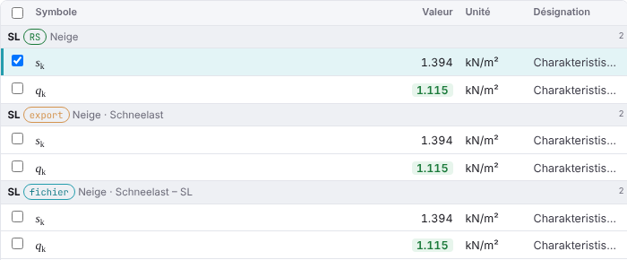
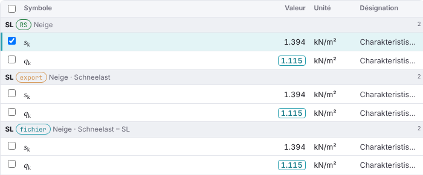
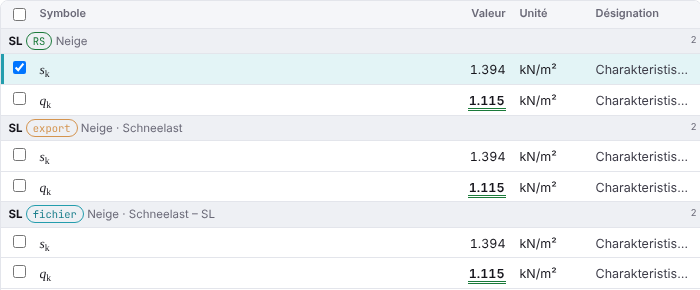
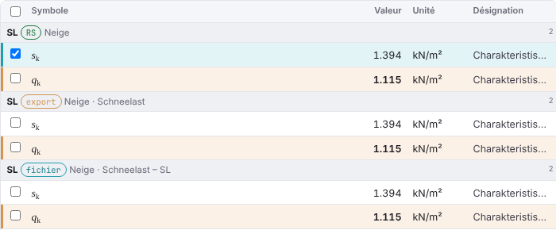
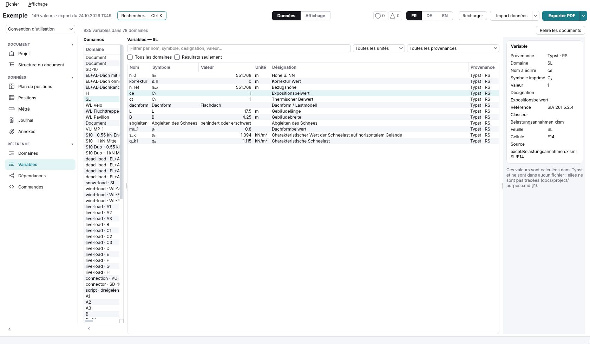
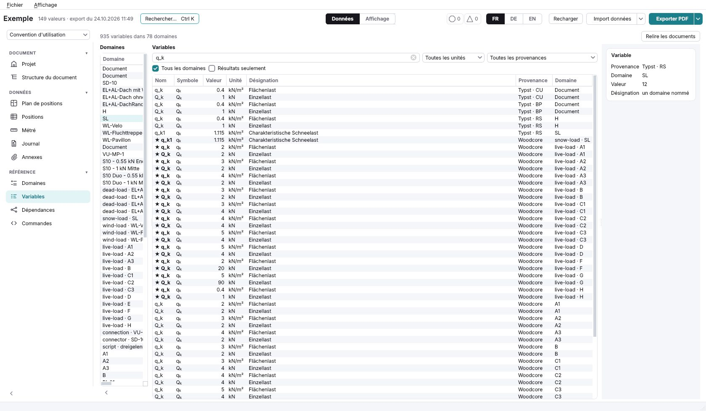
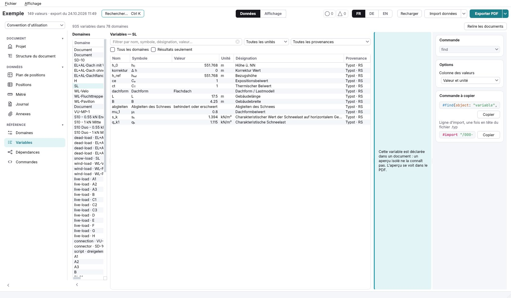

L'onglet où l'on cherche une valeur que le projet a calculée, pour l'imprimer ailleurs dans le rapport ou pour qu'un champ la suive. Vous avez retenu la proposition A le 24.10.2026 ; cette version applique vos retours. Chaque valeur est celle que lit le vrai onglet de Woodcore (master 57172dd) sur une copie de tests/projet-exemple : 918 variables dans 75 domaines, les variables propres des documents mises de côté (réponse 5).
| Votre retour | Dans cette version |
|---|---|
| La proposition A. | Elle est la fenêtre ; B, C et D sont retirées (plus bas, ce qu'elles proposaient). |
| Le volet de gauche : un menu déroulant, « Tous » par défaut, avec les groupes d'onglets et les onglets de Woodcore. | Le menu en haut à gauche reprend la navigation de Woodcore, dans son ordre et ses mots (tab_registry.py) : Actions › Actions permanentes › Poids propre et surcharge ; Actions variables › Charge utile, Neige, Vent, Séisme ; Combinaisons de charges ; Structure ; Assemblages ; Sécurité structurale et ses huit onglets ; Aptitude au service ; Acier ; Données › Python ; Référence › Domaines ; Document › Rapport de statique. Choisir un groupe prend tous ses onglets. Chaque entrée dit son nombre de variables ; un onglet qui n'en a pas (Séisme, Torsion…) est grisé. |
| Le filtre choisi à gauche apparaît dans la barre de recherche du centre, et on peut l'enlever. | Le menu, la source et le domaine cliqués sont des étiquettes au début de la barre (« Actions › Actions variables », « Charge utile · A1 export ») ; leur × les enlève, et ⌫ dans une barre vide enlève la dernière. La recherche cherche dans ce filtre. |
| Une recherche reste triée par domaine, une ligne de titre par domaine. | Toujours : avec ou sans recherche, avec un domaine ou tous, les variables sont sous la ligne de leur domaine (son nom, sa source, son onglet, son nombre). |
| Le symbole seul dans la ligne, pas le nom. | Les colonnes : case, symbole, valeur, unité, désignation. Le nom à écrire est dans l'infobulle du symbole et dans la fiche. |
| Ouvrir, depuis la fiche, l'onglet où la valeur a été calculée. | « Ouvrir l'onglet Neige ↗ » en tête de la fiche : l'onglet qui la calcule, même quand on l'a choisie dans le rapport qui la rappelle. |
| Régler la largeur des colonnes ; garder chaque variable sur une ligne, sans que les largeurs changent à chaque recherche. | Les colonnes ont une largeur fixe (symbole 120 px, valeur 120 px, unité 76 px, la désignation prend le reste). On la règle en glissant le bord droit d'un en-tête ; un double-clic la rend ; Woodcore la garde avec la vue de l'onglet. Un texte trop long est coupé par « … », entier au survol. |
| Une case à cocher à gauche ; Ctrl+clic, Maj+clic comme dans Windows ; copier la commande de toutes les variables choisies. | Clic : une variable. Ctrl+clic ou la case : en ajouter ou en retirer une. Maj+clic : la plage depuis la dernière cliquée, à travers les domaines. La case de l'en-tête prend tout ce qui est affiché. « Copier les 3 commandes » copie une ligne #var par variable, dans l'ordre de la liste. |
| Enlever les étoiles ; montrer autrement qu'une valeur est un résultat. | Quatre manières, plus bas, en captures et à essayer au-dessus de la fenêtre (question 6). |
| Question | Votre réponse | Dans cette version |
|---|---|---|
| 1. La proposition | A. | La fenêtre est A. |
| 2. Un calcul que plusieurs sources portent | Réponse 2 : une ligne par source. Un calcul n'est porté que par une source ; les autres le rappellent (#var(…, domain:) va le chercher, il ne le refait pas). | Chaque source est un domaine, avec son étiquette export, fichier ou RS, et un filtre « Toutes · Export · Fichiers · Rapport ». La fiche dit, sous « Le même calcul ailleurs », quelle source le calcule et lesquelles le rappellent, chacune un clic plus loin. |
| 3. Les désignations en allemand du classeur | Réponse 1 : telles qu'écrites. Il n'y aura plus de classeur. | Inchangées. |
| 4. La vue Affichage de l'onglet | Réponse 2 : retirée, la fiche suffit. | Pas de « Données · Affichage » : la commande est dans la fiche, et dans « Copier les commandes ». |
| 5. Les variables propres d'un document | Réponse 2 : cachées. | Les qk et Qk déclarés à la racine des trois documents ne sont plus listés. Les domaines que le rapport de statique déclare lui-même (S10 …) restent, sous Document › Rapport de statique. |
Un résultat est ce qu'un calcul déclare comme tel : qk1 de la neige, qk et Qk d'une charge utile, η d'une vérification. Quatre manières, sur les mêmes lignes (Charge utile · A1 et Neige · SL) ; la fiche suit la même. Le bouton « Résultats seulement » reste.




Captures de la vraie fenêtre de Woodcore (master 57172dd), ouverte sur une copie du projet d'exemple, après la lecture des trois documents.



#find, coupé, et un aperçu vide.1. La colonne des domaines est trop étroite : noms coupés, nombre et provenance hors de vue. → 260 px, le nom, l'étiquette de la source, le nombre, rangés sous leur onglet.
2. Les noms sont ceux du code (« snow-load · SL », « live-load · A1 »), et un fichier « A1 » ne dit pas qu'il est une charge utile. → Chaque domaine sous l'onglet qui le calcule, dans les mots de la navigation.
3. Trois lignes « Document » indistinctes. → Cachées (réponse 5).
4. Une recherche « Tous les domaines » est une liste à plat, le domaine dans une colonne. → Groupée par domaine.
5. Le ★ des résultats dépend de la source : qk de « live-load · A1 » l'a, le même qk du fichier « A1 » non, seul l'export disant les résultats. → Un résultat l'est dans chaque source qui rappelle le calcul.
6. La fiche d'un domaine choisi seul met le nombre de ses variables sous « Valeur » et sa sorte sous « Désignation ». → Une fiche de domaine : son onglet, son fichier à inclure, son nombre de variables et de résultats.
7. La provenance dit où la valeur a été lue (« Typst · RS » pour une valeur du classeur) et montre la source brute. → « Vient de : le classeur · Belastungsannahmen.xlsm, feuille SL », et quelle source calcule.
8. Les fichiers des calculs arrondissent à six décimales : kβ de SD-10 écrit 1.265678 ; Rd vaut 5,726197608 dans l'export et 5,726196580 dans le rapport (2·10-7). Négligeable ici ; hors de cet onglet (calc/domains/unfold.py), à trancher à part.
| Quoi | Où | Coût, ce qu'il faut décider |
|---|---|---|
| Le menu des onglets | calc/tools/variables_tab.py ; tab_registry.NAV_GROUPS et NAV_SECTIONS, leurs mots | Chaque domaine dit l'onglet qui le calcule : un champ de variable_sources.Domain (le calcul de l'export, le dossier du fichier d'une vérification). |
| Le filtre dans la barre | la barre de recherche de l'onglet | Un champ à étiquettes ; une brique commune si d'autres onglets la veulent. |
| La liste groupée, une ligne par variable | build_list, fill_list | Un QTreeView à deux niveaux (domaine, variable), le symbole par richtext.MathDelegate, les largeurs gardées dans view_state. |
| Le choix multiple et la copie | la liste, build_reference_calls | ExtendedSelection de Qt fait Ctrl et Maj ; les cases suivent la sélection. |
| « Ouvrir l'onglet » | la fiche ; la fenêtre, qui sait déjà amener un onglet devant | L'onglet ouvert sur le calcul et la ligne. |
| Plus de vue Affichage | VIEWS de l'onglet, display_entries | La commande va dans la fiche ; une décision qui change celle de la v0.117. |
| Les variables des documents cachées | registry_domains | Le domaine vide d'un document n'est plus listé. |
| Documentation | docs/ui/tab-variables.md, docs/decisions.md §13 | Ce chantier passe par big-feature. |
B (la recherche d'abord, un grand champ et des bulles), C (le rapport pour sommaire, ce que chaque document imprime) et D (un tableur filtré par colonne). La version 1 de cet artefact, à la même adresse, les garde.
L'option recommandée est la première.